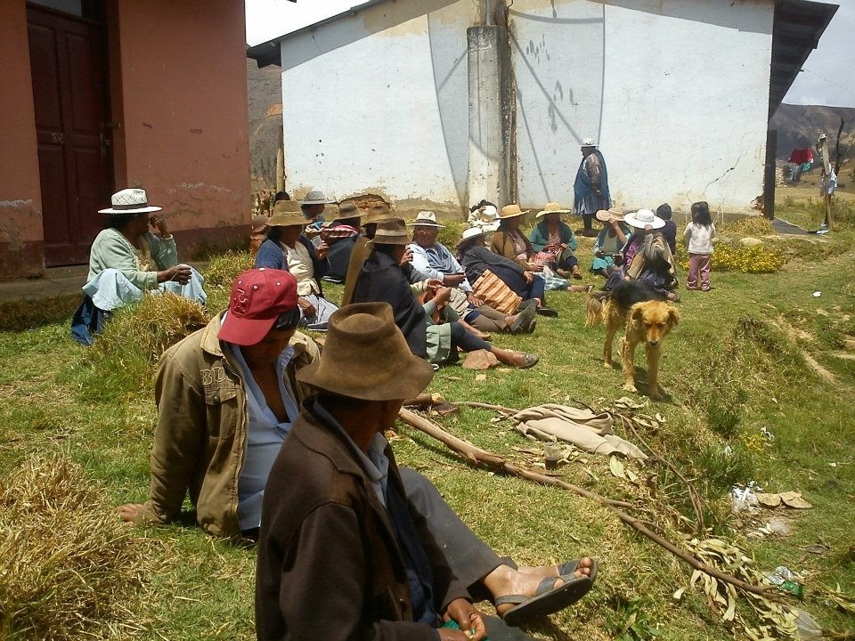

PROJECTE D'ENGINYERIA I COOPERACIÓ PEL DESENVOLUPAMENT
FASE 1 • COOPERACIÓ, IDH I TELECOMUNICACIONS
PROJECTE POCONA
Connectant la Salut i l'Educació als Andes de Bolívia
Desenvolupament Humà, Models de Cooperació i Càlcul de la Bretxa Digital a Pocona
🛡️ NIVELL SEGUR • GUIA ESTRUCTURADA

Guia d'evidències competencials amb pautes guiades per a les operacions matemàtiques, dilemes ètics i tasques d'ampliació basades en fets reals.
Nom i Cognoms de l'Alumne/a:
Curs i Grup:
3r d'ESO
🌐
Bloc A: Comprensió de l'IDH i Desigualtats Globals
1
Fonament Conceptual: Per què l'IDH i no només el PIB?
Teoria Bàsica
El PIB només compta els diners d'un país, però els diners no ho són tot. Per saber si la gent hi viu bé, l'ONU utilitza l'Índex de Desenvolupament Humà (IDH).
Explica breument com es mesura cadascun dels 3 pilars de l'IDH completant les frases següents:
1. Salut i Vida: Es mesura mirant l'esperança de vida, que vol dir quants anys...
2. Educació: Es mesura mirant quants anys d'escola...
3. Renda i Feina: Es mesura mirant si les famílies tenen diners suficients per...
2
Estudi de Cas: Com es viu a Catalunya i Espanya? L'Exemple del Desenvolupament Molt Alt
Anàlisi d'Indicadors
A l'apartat 1.1 de la web i al simulador es constata que 🇪🇸 Catalunya i Espanya se situen al grup de Desenvolupament Molt Alt amb un IDH de 0,911 i una esperança de vida de 83,6 anys (mortalitat infantil de només 3 per 1.000). En canvi, quan ho comparem amb una superpotència econòmica com els 🇺🇸 Estats Units, ens trobem amb una paradoxa sorprenent sobre com es gestionen els diners de la salut:
• 🇺🇸 Als Estats Units (model privat): La sanitat funciona principalment com un negoci privat. Es gasten una mitjana desorbitada d'uns 12.500 dòlars per persona cada any (la xifra més alta de tot el planeta, gairebé el triple que a casa nostra!). Tot i pagar tants diners, per anar al metge cal tenir una assegurança privada molt cara o pagar de la teva butxaca. Si una persona es queda a l'atur o no pot pagar la quota mensual, una simple ambulància o una operació d'apendicitis pot costar més de 30.000 $ i arruïnar tota la família. Per por a les factures, milions de persones eviten anar a revisions mèdiques i només acudeixen a urgències quan ja estan greument malaltes. Com a resultat, la seva esperança de vida s'ha estancat als 76,4 anys.
• 🇪🇸 A Catalunya i Espanya (model públic i universal): Tenim un sistema de sanitat pública universal finançat entre tota la societat a través dels impostos. La despesa anual és de només uns 4.000 dòlars per persona (menys d'un terç que als EUA!). Tothom, tant si té una feina ben pagada com si no té recursos, té assignat el seu metge de capçalera al CAP (Centre d'Atenció Primària), vacunació infantil gratuïta i tractament als hospitals sense rebre cap factura. Aquesta cura preventiva continuada fa que l'esperança de vida arribi als 83,6 anys (vivim de mitjana més de 7 anys més que als EUA!).
💭 Pregunta de Reflexió Crítica: Per què gastar el triple de diners en sanitat privada no aconsegueix que la gent visqui més anys? Quins avantatges té per a la societat que la salut sigui un dret públic universal garantit i no un negoci privat de pagament? Què passaria amb l'esperança de vida i la igualtat a casa nostra si el nostre sistema es privatitzés seguint el model nord-americà?
3
Representació Gràfica amb Dades Reals de la Web: Diagrama de Barres i Diagrama de Sectors
Càlcul i Gràfics
Amb les dades del tema 1.1 de la web, fem els càlculs previs necessaris i després dibuixa les dues gràfiques als espais preparats:
📊 Càlculs Gràfica 1: Barres (Esperança de Vida)
Dades web: 🇪🇸 Espanya: 84 anys | 🇧🇴 Bolívia: 64 anys | 🇹🇩 Txad: 53 anys
Espai per a càlculs d'escala i mitjana aritmètica (fes les teves operacions sense ajudes):
🥧 Càlculs Gràfica 2: Diagrama de Sectors (Mortalitat Infantil)
Espai per a càlculs de percentatges (%) i graus (º) de cada sector (fes les operacions):
📊 1. Gràfica de Barres: Esperança de Vida(Dibuixa 4 barres: 3 països + Mitjana)
90 a.
60 a.
30 a.
0 a.
🇪🇸 Espanya🇧🇴 Bolívia🇹🇩 Txad📊 Mitjana (¯x)
💡 Dibuixa les 4 barres amb les alçades calculades i escriu el valor en anys a dalt de cadascuna.
🥧 2. Diagrama de Sectors: Mortalitat Infantil(360º en total)
0º / 360º90º180º270º
🇹🇩 Txad
🇧🇴 Bolívia
🇪🇸 Espanya
💡 Dibuixa els 3 sectors a partir dels graus calculats i pinta cadascun amb el seu color de la llegenda.
4
Qüestionari Tipus Test: Classificació de Països i Dimensions de l'IDH
9 Preguntes Tipus Test
4.1. Com s'escriu la nota de l'IDH d'un país?
A)Com un percentatge de 0% a 100%.
B)Com un número decimal entre 0 i 1 (per exemple 0,698 a Bolívia o 0,911 a Catalunya).
C)En euros o dòlars de sou al mes.
D)Com una nota de l'escola de l'1 al 10.
4.2. Quines són les 3 coses fonamentals que mesura l'IDH per saber si la gent viu bé?
A)Nombre de cotxes, piscines privades i supermercats grans.
B)Salut (esperança de vida), Educació (anys d'escola) i Diners suficients per viure amb dignitat.
C)El nombre de policies, bancs i centrals nuclears.
D)Quantes hores mira la televisió cada família al dia.
4.3. Quins països formen part del grup de «Desenvolupament Baix» (IDH menor de 0,550)?
A)Països rics amb moltes autopistes com Alemanya o el Japó.
B)Països com el Txad o el Níger, amb greus mancances d'aigua potable, hospitals i escoles.
C)Països que només utilitzen telèfons 5G d'última generació.
D)Tots els països d'Amèrica del Nord.
4.4. A quin grup pertany Bolívia (on està Pocona) amb un IDH de 0,698?
A)Desenvolupament Molt Alt (com Catalunya).
B)Desenvolupament Mitjà, però la mitjana amaga que al camp com Pocona menys del 15% té internet.
C)Desenvolupament Baix extrem per sota del Txad.
D)No té grup perquè a la muntanya no hi ha dades.
4.5. Per què portar Internet a Pocona millora directament la salut i l'educació de la gent?
A)Perquè permet fer telemedicina des del consultori amb metges de ciutat i que els nens i nenes tinguin llibres digitals a l'escola.
B)Perquè així tothom pot comprar roba de marca per internet.
C)Perquè l'ONU prohibeix posar aigua neta si no hi ha wifi primer.
D)Perquè fa que automàticament plogui més sobre els conreus de patates.
4.6. Si un país guanya molts diners amb el petroli però té pocs metges i escoles, quin IDH tindrà?
A)Un IDH que queda frenat i més baix, perquè els diners no poden tapar que la gent mor jove o no sap llegir.
B)L'IDH més alt del món automàticament, perquè qui té diners té la màxima nota.
C)No es pot calcular perquè els diners del petroli no compten per a res.
D)Tindrà exactament la mateixa nota que Suècia o Espanya.
4.7. Com ha de dissenyar la xarxa d'antenes un equip d'enginyeria cooperativa a Pocona?
A)Connectant primer el centre de salut i les escoles per ajudar la gent del poble, abans que buscar el negoci.
B)Posant l'antena només a les botigues privades de la gent rica.
C)Fent la instal·lació més cara possible encara que no hi hagi electricitat.
D)Esperant que una empresa privada estrangera vingui a regalar els cables.
4.8. Per què tenir aigua potable a les cases salva la vida de tants nens i nenes petits?
A)Perquè l'aigua neta evita que agafin infeccions i diarrees greus, que són la causa principal de mortalitat infantil.
B)Perquè l'aigua embotellada dóna punts per al PIB del país.
C)Perquè els nens només han de beure llet en pols importada.
D)L'aigua neta no té cap relació amb la salut dels infants.
4.9. Què passa si els joves d'un poble només poden anar a l'escola 2 o 3 anys (com al Txad)?
A)Que els costa molt aprendre a llegir i calcular, i de grans no poden reparar les màquines ni les antenes del seu poble, depenent sempre de fora.
B)Que tenen més facilitat per inventar tecnologia sense necessitat d'estudiar.
C)Que l'escola no serveix per a res en el desenvolupament humà d'una comunitat.
D)Que l'ONU els regala automàticament un ordinador portàtil a cadascú.
5
Càlcul i Anàlisi de Dades Reals (Simulador 1.1)
Simulador 1.1Càlcul i Anàlisi
Observa les dades oficials del simulador interactiu per a 🇪🇸 Espanya, 🇧🇴 Bolívia i 🇹🇩 Txad:
Indicador Oficial
🇪🇸 Espanya (Molt Alt)
🇧🇴 Bolívia (Mitjà)
🇹🇩 Txad (Baix)
Esperança de vida en néixer
83,6 anys
64,0 anys
53,0 anys
Anys mitjans d'escola
10,6 anys
9,2 anys
2,6 anys
Mortalitat infantil (de cada 1.000 nadons)
3 per 1.000
21 per 1.000
107 per 1.000
Accés a aigua potable regular (%)
98%
88%
43%
Població amb connexió a Internet (%)
95%
65%
18%
a) Ràtio de desigualtat sanitària i impacte demogràfic en vides infantils:
• Ràtios relatives: Quantes vegades és superior el risc de morir abans dels 5 anys al Txad (107 per 1.000) respecte a Espanya (3 per 1.000)? I a Bolívia (21 per 1.000) respecte a Espanya? (Arrodoneix a 1 decimal).
• Impacte absolut en vides: Si neixen 10.000 infants durant un any en cadascun d'aquests països, quants infants moren abans dels 5 anys al Txad? Quants en moren a Espanya? Quantes vides infantils se salvarien al Txad per cada 10.000 naixements si tingués els serveis bàsics d'Espanya?
• Ràtio Txad vs Espanya: vegades més.
• Ràtio Bolívia vs Espanya: vegades més.
• Vides perdudes sobre 10.000 naixements → Al Txad: infants.
A Espanya: infants.
• Diferència de vides que se salvarien per cada 10.000 naixements: vides salvades.
b) Bretxa educativa relativa i pèrdua de potencial en el cicle vital:
• Bretxa d'anys: Quants anys d'escolarització de diferència hi ha entre un jove a Espanya (10,6 anys) i un al Txad (2,6 anys)?
• Percentatge relatiu d'accés escolar: Quin percentatge de l'escolarització d'Espanya assoleix un infant al Txad? (Txad ÷ Espanya) × 100.
• Fracció de vida a l'escola: Calcula quin percentatge de la seva esperança de vida passa a l'escola una persona a Espanya (10,6 anys sobre 83,6) versus una persona al Txad (2,6 anys sobre 53). Què implica aquesta pèrdua sistemàtica per al desenvolupament d'un país?
• Diferència d'escolarització: anys.
• Percentatge d'accés escolar Txad/Espanya: %.
• Fracció de vida escolaritzada → A Espanya: % de la vida.
Al Txad: % de la vida.
6
El Teu Simulador de l'IDH: Què has après jugant?
Simulador 1.1La meva experiència
Al joc interactiu «El Desafiament de l'IDH» vas moure els cursors per intentar endevinar les dades reals d'Espanya, Bolívia i el Txad, i després en vas veure la comprovació gràfica. Respon a partir de la teva experiència jugant i de les decisions que vas prendre:
a) Els teus resultats obtinguts al simulador:
🎯 Precisió Global que vas treure:%
🏅 Títol assolit pel sistema:
b) La teva intuïció inicial vs. La realitat (On et vas equivocar més?):
En quin país i en quin indicador la teva predicció es va allunyar més de la realitat (etiqueta vermella Molt lluny)? Vas pensar que aquell país estava millor o pitjor del que realment està? Per què creus que tenies aquesta impressió abans de veure les dades?
c) Connexió entre indicadors (L'efecte cadena a Pocona):
Al simulador vas veure indicadors de Salut, Educació, Aigua, Llum i Internet. Si en un municipi rural com Pocona aconseguim millorar l'accés a l'electricitat i l'aigua neta, quins altres indicadors milloraran automàticament de retruc? Explica com estan connectats.
d) La teva decisió com a enginyer/a cooperant:
Imagina que arribes a Pocona amb un pressupost limitat i només pots finançar una primera fase d'urgència: prioritzaries portar Internet a l'ambulatori mèdic i l'escola o millorar la xarxa elèctrica del poble? Raona la teva decisió pensant en el benestar de la gent.
e) Què has descobert sobre els teus propis prejudicis?:
Sovint pensem que els països del Sud global «no tenen res» o, al contrari, no som conscients de com és de greu viure sense aigua potable o amb només 2 anys d'escola. Què és el que més t'ha canviat la manera de pensar després de jugar amb aquestes dades reals?
Bloc 1.1 • Cas Real 1: Riquesa vs Desenvolupament🚀 Tasca d'Ampliació (Opcional)
1. La Paradoxa del Petroli a Guinea Equatorial: Quan el PIB no es tradueix en benestar
📰 Font documental: Informes del Programa de les Nacions Unides pel Desenvolupament (PNUD) i investigacions del Banc Mundial sobre les economies d'exportació d'hidrocarburs (2022-2024).
A mitjans de la dècada de 1990, Guinea Equatorial, un petit país de la costa de l'Àfrica Central amb poc més d'un milió i mig d'habitants, va descobrir immenses reserves marítimes de petroli i gas natural. En pocs anys, la seva economia va experimentar el creixement percentual més ràpid del planeta: multinacionals energètiques nord-americanes i europees van instal·lar plataformes d'extracció i els ingressos de l'Estat es van disparar de manera vertiginosa.
Segons els indicadors macroeconòmics tradicionals basats exclusivament en els diners, Guinea Equatorial va esdevenir un miracle financer. El seu Producte Interior Brut per càpita (PIB per càpita) va superar els 30.000 dòlars anuals en els seus anys d'esplendor, superant fins i tot països europeus com Portugal o la República Txeca, i situant-se com el país teòricament «més ric» de tot el continent africà.
Tanmateix, quan l'Organització de les Nacions Unides (ONU) va publicar els informes anuals de l'Índex de Desenvolupament Humà (IDH), el món va presenciar una contradicció esfereïdora: malgrat generar milers de milions de dòlars per la venda de cru, Guinea Equatorial ocupava el lloc 145è del rànquing mundial d'IDH, situat en el grup de desenvolupament humà mitjà-baix, per darrere de nacions amb una fracció molt inferior de diners per habitant com Ghana, Namíbia o el Marroc.
La causa d'aquest abisme rau en com es reparteix la riquesa i en què s'inverteix: els ingressos del petroli van anar a parar majoritàriament a una elit política molt reduïda i a la construcció d'infraestructures luxoses buides (com aeroports monumentals, autopistes sense trànsit i palaus governamentals), mentre més del 65% de la població civil continuava sense accés a aigua potable corrent ni xarxes de clavegueram. La mortalitat infantil continuava figurant entre les més altes del món, l'esperança de vida amb prou feines superava els 60 anys i les escoles públiques patien una manca absoluta de professorat qualificat, llibres de text i electricitat. Aquest cas va evidenciar davant la comunitat científica internacional per què mesurar només el PIB és un miratge enganyós si no s'avalua la salut i l'educació de tota la societat.
País
PIB per càpita (PPA en USD)
Esperança de Vida en néixer
Anys mitjans d'escolarització
Rànquing PIB Mundial
Rànquing IDH Mundial
Diferència (PIB vs IDH)
🇬🇶 Guinea Equatorial
18.150 $
61,2 anys
5,9 anys
Lloc 78
Lloc 145
-67 posicions ⬇️
🇬🇭 Ghana
6.400 $
64,3 anys
7,3 anys
Lloc 135
Lloc 133
+2 posicions ⬆️
🇨🇷 Costa Rica
22.200 $
80,8 anys
8,8 anys
Lloc 68
Lloc 58
+10 posicions ⬆️
🇳🇴 Noruega
82.500 $
83,2 anys
13,0 anys
Lloc 6
Lloc 2
+4 posicions ⬆️
📝 Qüestionari d'Avaluació (7 Preguntes Tipus Test)
1. Què mesura exactament el PIB per càpita d'un país?
2. Segons el text, per què va augmentar tant el PIB de Guinea Equatorial als anys noranta?
3. Quina anomalia mostra la taula en comparar el rànquing del PIB i el de l'IDH a Guinea Equatorial?
4. Quin és el motiu principal pel qual la riquesa del petroli no va fer pujar l'IDH de la població?
5. Si comparem Ghana amb Guinea Equatorial a la taula, què observem?
6. Per què Costa Rica assoleix una esperança de vida de 80,8 anys amb un PIB moderat?
7. Quina és la conclusió central de la «paradoxa del petroli» per a l'anàlisi del desenvolupament?
💭 Preguntes de Reflexió Crítica i Anàlisi
1. El miratge de les mitjanes matemàtiques: Quan el PIB no es tradueix en benestar
Guinea Equatorial té un PIB per càpita teòricament molt elevat gràcies a l'extracció petroliera (uns 18.500 $ per persona a l'any), però la realitat distributiva mostra un contrast extrem:
• Concentració d'ingressos: L'1% de la població (l'elit governant i petroliera) acapara més del 80% de tots els recursos del petroli.
• Pobresa estructural: Més del 70% de la ciutadania viu per sota del llindar de la pobresa extrema (amb menys de 2 $ al dia), sense accés a aigua potable regular ni xarxa elèctrica.
• Impacte en la infància: Prop del 20% dels infants (1 de cada 5) moren abans de fer els 5 anys per malalties fàcilment curables.
Dissenya a continuació una representació gràfica o visual que denuncii com la mitjana oficial del PIB oculta aquesta situació:
Reflexió raonada: A partir de les dades i de la teva representació, explica per què la mitjana matemàtica del PIB per càpita és un miratge enganyós i per què cal analitzar la distribució real:
2. Prioritats de despesa pública
El text explica que el govern va prioritzar palaus, grans edificis i autopistes en lloc de clavegueram, vacunes i escoles de poble. Quins interessos creus que motiven aquest tipus de decisions polítiques i quines conseqüències tenen a llarg termini per als infants?
3. Anàlisi comparativa Ghana vs Guinea Equatorial
Observant la taula, Ghana té menys de la meitat d'ingressos que Guinea Equatorial, però la seva població viu més anys i els nens passen més temps a l'escola. Què demostra això sobre el paper que juguen les institucions públiques i les polítiques socials?
4. Proposta de redirecció econòmica
Si fossis nomenat/da ministre/a de Planificació d'un país ric en recursos naturals però amb baix IDH, quines 3 mesures concretes prendries amb els beneficis del petroli per augmentar l'esperança de vida i el nivell educatiu en menys de 5 anys?
Bloc 1.1 • Cas Real 2: La Desigualtat Interna🚀 Tasca d'Ampliació (Opcional)
2. L'Abisme Ocult: L'IDH Ajustat per la Desigualtat (IDH-D) a Sud-àfrica i l'Índia
📰 Font documental: Informe Global sobre Desenvolupament Humà del PNUD («La desigualtat en temps de transició») i dades de la base de dades mundial sobre desigualtat (WID.world).
Quan mirem la nota oficial d'un país a l'IDH (per exemple, un 0,72 o un 0,65), assumim intuïtivament que reflecteix la vida de qualsevol ciutadà d'aquell territori. Però què passa quan dins d'un mateix país coexisteixen barris amb hospitals punters i xalets de luxe al costat de milions de persones amuntegades en barris de barraques sense aigua ni metges?
L'any 2010, per evitar que els governs s'amaguessin darrere de xifres mitjanes que tapaven la pobresa extrema dels seus col·lectius més vulnerables, les Nacions Unides van introduir l'IDH-D (Índex de Desenvolupament Humà ajustat per la Desigualtat). L'IDH-D aplica una penalització matemàtica a la nota del país segons el grau de desigualtat que hi ha en cadascuna de les tres dimensions: salut, educació i renda. Si no hi ha desigualtat (tothom té accés semblant als serveis), l'IDH i l'IDH-D són idèntics. En canvi, si la riquesa i els serveis estan monopolitzats per una petita minoria, la nota de l'IDH-D s'enfonsa.
El cas més emblemàtic del planeta és Sud-àfrica. Tres dècades després de la fi del règim racista de l'apartheid, Sud-àfrica manté l'índex de Gini (mesura de desigualtat de la renda) més alt del món: el 10% més ric de la societat posseeix més del 80% de tota la riquesa nacional. Mentre l'IDH estàndard de Sud-àfrica (0,713) el col·loca formalment al grup de Desenvolupament Humà Alt, el càlcul de l'IDH-D revela una caiguda demolidora de més del 30% de la seva nota (baixant fins a 0,495, equivalent a un país de desenvolupament baix).
Un fenomen semblant passa a l'Índia: el gegant asiàtic presumeix de ser una potència espacial i informàtica mundial amb un PIB global gegantí, però la seva pèrdua per desigualtat interna supera el 25% a causa de les enormes diferències entre els estats del sud (com Kerala, amb escolarització gairebé universal) i els estats rurals del nord (com Bihar o Uttar Pradesh, on milions de nenes queden fora de l'escola i la desnutrició infantil és crònica). L'IDH-D permet desemmascarar aquesta realitat dual.
País
IDH Oficial (Mitjana)
IDH-D (Ajustat per Desigualtat)
Pèrdua Total per Desigualtat
Pèrdua en Salut
Pèrdua en Educació
Pèrdua en Ingressos
🇿🇦 Sud-àfrica
0,713 (Alt)
0,495 (Baix)
-30,6%
22,1%
17,4%
48,2%
🇮🇳 Índia
0,644 (Mitjà)
0,478 (Baix)
-25,8%
21,4%
32,6%
22,5%
🇧🇷 Brasil
0,754 (Alt)
0,578 (Mitjà)
-23,3%
13,5%
20,1%
34,2%
🇫🇮 Finlàndia
0,940 (Molt Alt)
0,890 (Molt Alt)
-5,3%
2,8%
3,1%
9,8%
📝 Qüestionari d'Avaluació (8 Preguntes Tipus Test)
1. Què és exactament l'IDH-D creat per l'ONU l'any 2010?
2. Què passaria si en un país hipotètic tothom tingués exactament la mateixa salut, educació i renda?
3. Quina pèrdua percentual pateix la nota de Sud-àfrica quan s'aplica l'IDH-D?
4. En quina dimensió concreta pateix Sud-àfrica la pèrdua més greu per desigualtat segons la taula?
5. Quina dimensió és la que penalitza més l'Índia en el seu IDH-D (32,6%)?
6. Per què a Finlàndia la pèrdua per desigualtat és tan reduïda (només el 5,3%)?
7. Per què l'IDH oficial pot donar una impressió enganyosa si no es mira l'IDH-D?
8. Quina utilitat té l'IDH-D per als organismes de cooperació i drets humans?
💭 Exercicis de Representació Gràfica i Anàlisi Crítica
📊1. Representació Gràfica: El 10% de la població té el 80% dels recursos
A Sud-àfrica, el 10% més ric de la societat acumula el 80% de tota la riquesa nacional, mentre que el 90% restant de ciutadans s'ha de repartir només el 20% restant.
Realitza dues representacions diferents per plasmar visualment aquesta desigualtat extrema en els dos espais següents:
📊 Representació 1: Amb Gràfiques
👥 Representació 2: Amb Siluetes de Persones i Monedes
Guia de síntesi: Quan mires el dibuix que has fet, què s'entén molt millor que si només llegeixes els números?
2. La bretxa educativa interna a l'Índia
La pèrdua més greu a l'Índia es produeix a l'educació (32,6%). Tenint en compte que a moltes zones rurals les nenes abandonen l'escola abans que els nens per cuidar la llar o treballar al camp, com creus que s'entrecreua la desigualtat econòmica amb la desigualtat de gènere?
3. La lliçó de Finlàndia
A Finlàndia, la pèrdua en salut és de només el 2,8% i en educació del 3,1%. Quines polítiques públiques creus que permeten que pràcticament qualsevol infant finlandès, neixi a la ciutat o en un poble aïllat, tingui accés a la mateixa qualitat d'educació i atenció sanitària?
4. Justícia redistributiva vs creixement econòmic
Molts economistes afirmen que el més important per a un país en desenvolupament és «fer créixer el pastís» (augmentar el PIB global) i que la igualtat ja vindrà més tard. Segons el que has après sobre l'IDH-D, per què créixer econòmicament sense redistribuir pot empitjorar la vida de la majoria de la població?